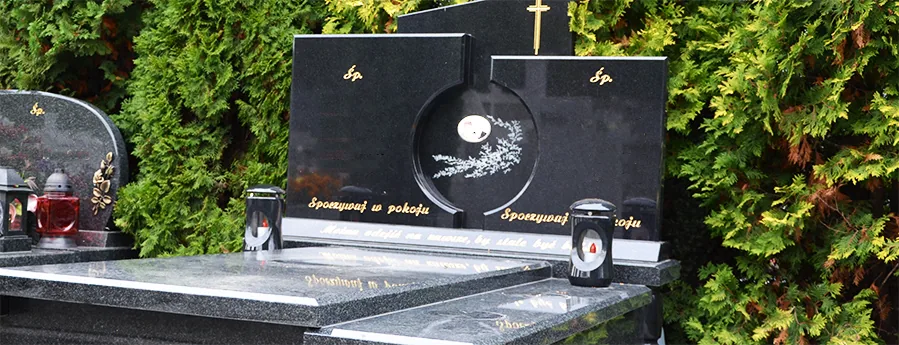
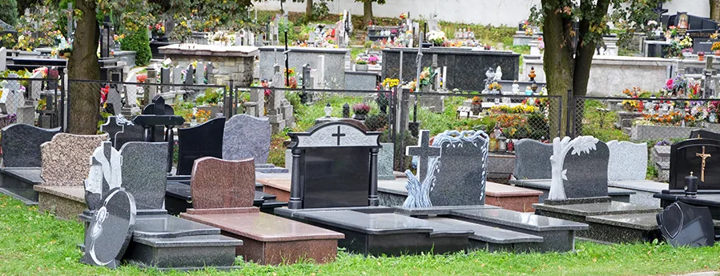

Zakład Kamieniarski Kazimierz Jasica, Limanowa
Nagrobki i grobowce z granitu
Wykonujemy od podstaw, z granitów z całego świata: projekt, liternictwo i montaż na terenie całej Małopolski.
Granity z całego świataWszystkie dostępne barwy i wzory.
Od podstaw u nasWłasna produkcja, dlatego atrakcyjne ceny.
Liternictwo i montażNa terenie całej Małopolski.
Ekspozycja przy cmentarzuul. Ks. Łazarskiego 20, Limanowa.

Zobacz kamień na żywo
Kolor granitu najlepiej ocenić w świetle dziennym. Część wzorów stoi na naszej ekspozycji przy biurze, obok cmentarza w Limanowej. Wykonujemy też projekty indywidualne.
Dojazd i kontakt